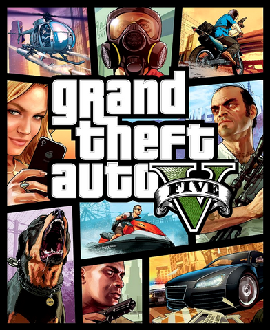

Grand Theft Auto V (GTA V) ir videospēle, kas tika izdota 2013. gada 17. septembrī. To izstrādāja Rockstar North un izdeva Rockstar Games, Take-Two Interactive. Spēle tika veidota PlayStation 3 un Xbox 360 konsolēm. Šī ir 15. spēle Grand Theft Auto sērijā.
Spēle pirmajās 24 stundās pēc izdošanas guva 800 miljonus ASV dolāru lielus ieņēmumus, pirmajās trijās dienās tā guva 1 miljardu dolāru lielus ieņēmumus, kļūstot par visātrāk pārdotāko izklaides produktu industrijas vēsturē.[1] Time Grand Theft Auto V nosauca par 2013. gada labāko spēli
